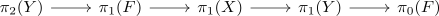

acyclic map as surjection on pi_1 with perfect kernel
Proposition
Let $f: X \rightarrow Y$ be an acyclic map between spaces. Then for all $x \in X$ the map
\begin{align*}
\pi_1(X,x) \rightarrow \pi_1(Y,f(x))
\end{align*}
is surjective with perfect kernel.
Proof
consider the long exact sequence of a a fiber sequence in pointed Anima. This is given by

Then as
\begin{align*}
\tilde{H}(Y) = *
\end{align*}
we may conclude that $\pi_1(X) \twoheadrightarrow \pi_1(Y)$ is surjective since $\pi_0(F) = *$
Furthermore $\pi_1(F) \twoheadrightarrow \mathrm{ker}(\pi_1(f))$ by exactness. So it suffices to show that $\pi_1(F)$ is a perfect group (cf. image of a perfect group as perfect group).
That we can deduce as $\pi_1(F)^{\mathrm{ab} } \cong H_1(F) = *$